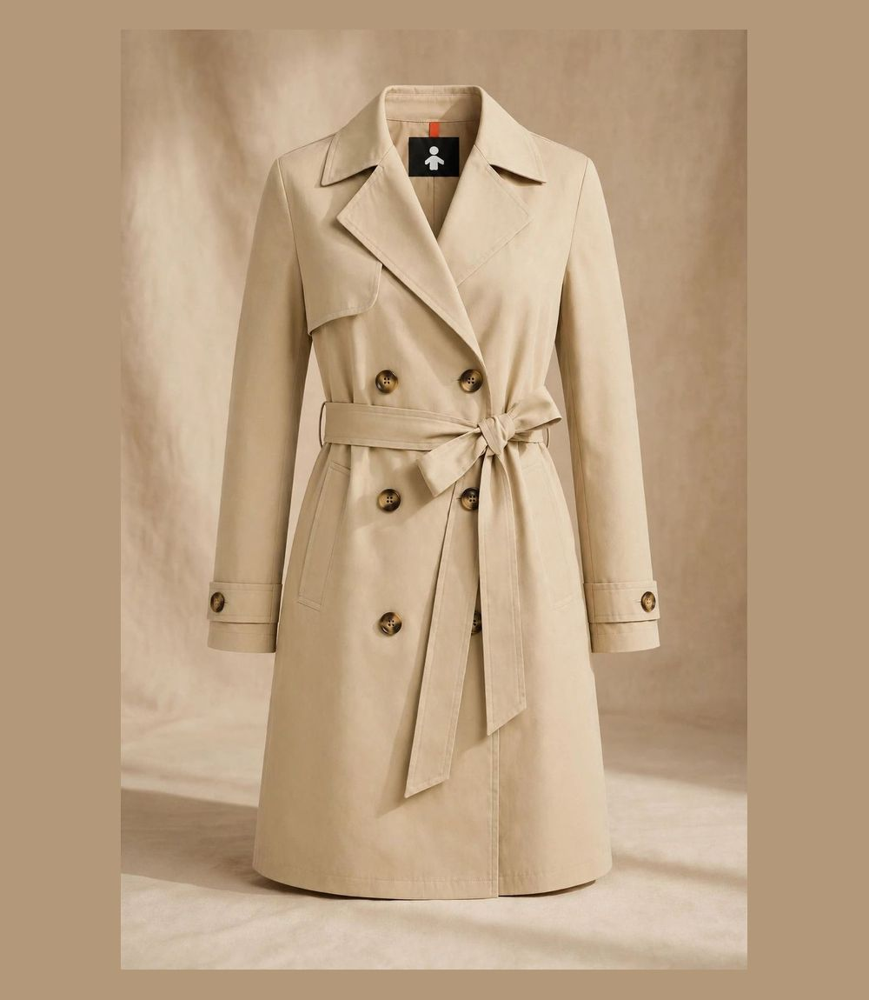
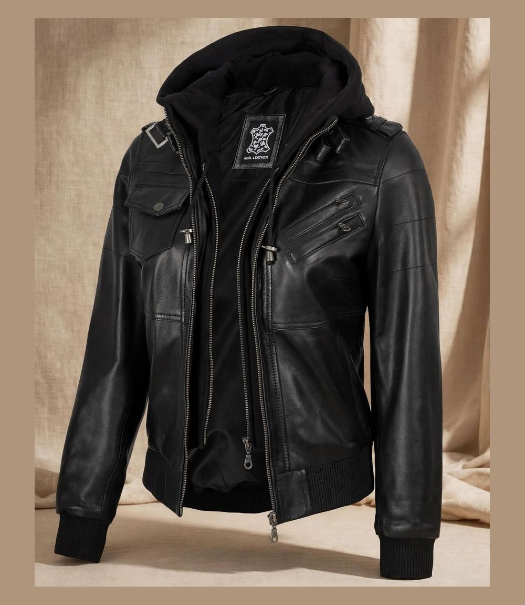
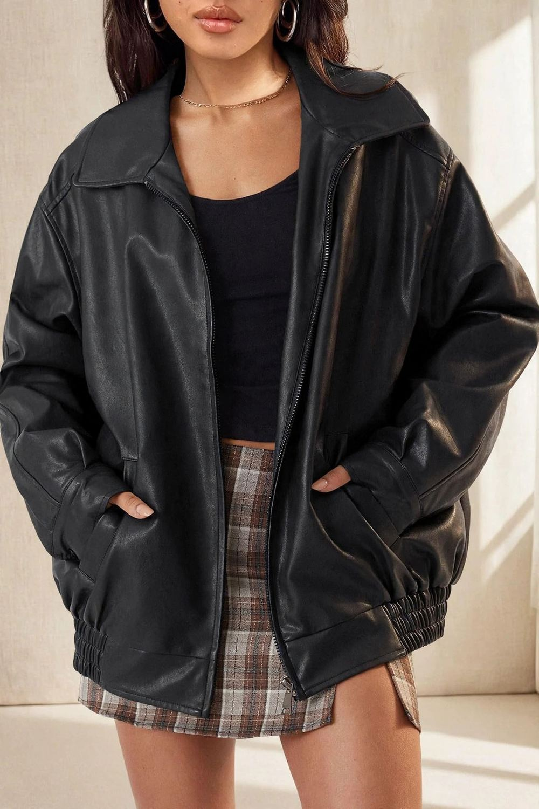
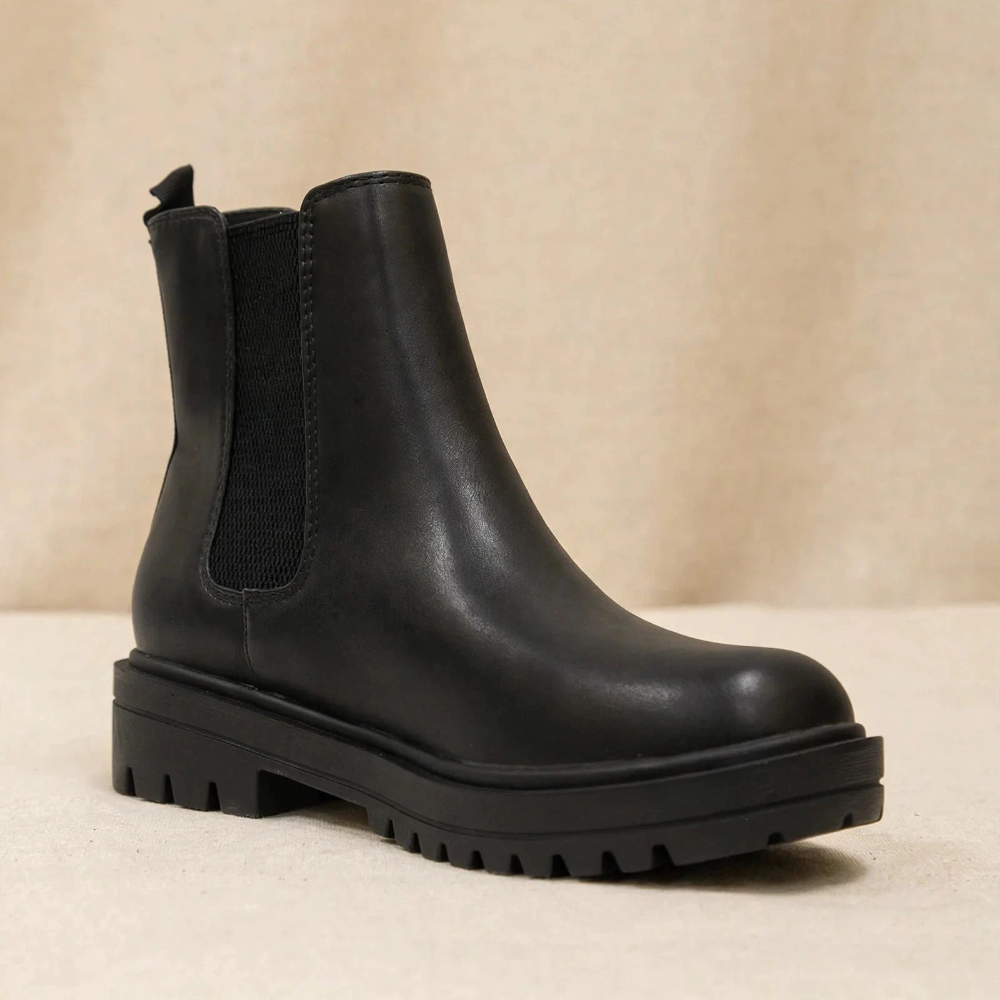
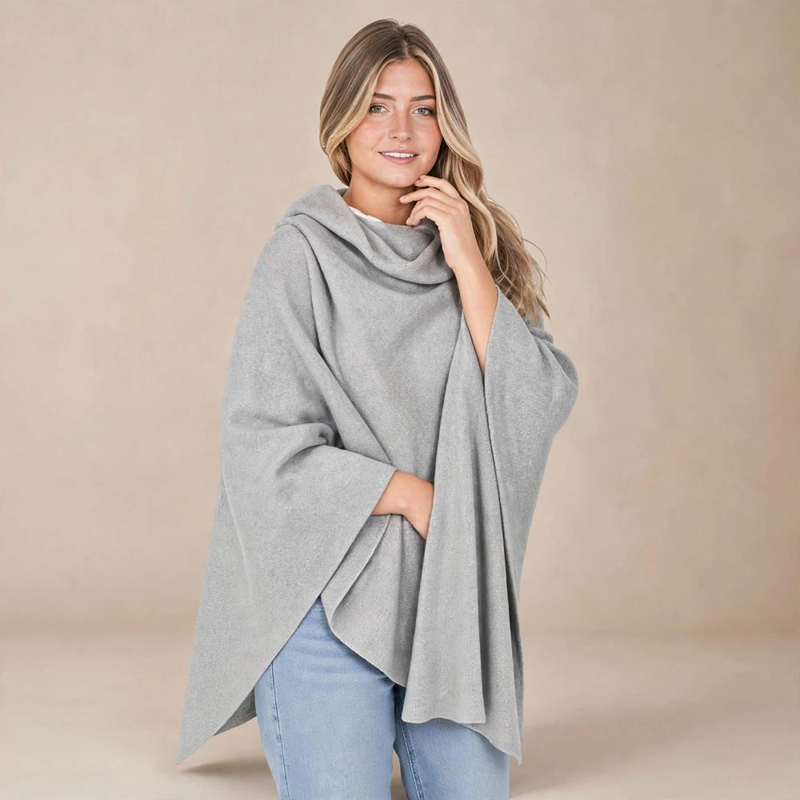

Finding the best winter coats and jackets for women usually means choosing between two bad options: genuinely warm but shapeless, or chic but freezing. It doesn't have to be that way. The best winter coats and jackets for women in 2026 are the ones built for layering — a polished outer shell with enough room underneath for a real sweater and a thermal base, so you stay warm without ever looking bundled up.
We combed through the highest-rated women's outerwear on Amazon and narrowed it to eight picks, every one rated 4.3 stars or higher by verified buyers. The list covers the two coat silhouettes that matter most this winter — the long trench and the faux leather jacket — plus the exact layers and finishing pieces that turn them into a complete cold-weather system. If you want the broader cold-weather picture, our guide to the best winter essentials on Amazon pairs perfectly with this one.
As an Amazon Associate, LOOKIQ earns from qualifying purchases.
Quick Comparison: Best Winter Coats and Jackets for Women in 2026
In a hurry? Here is the whole list at a glance. Ratings and prices are from the LOOKIQ catalog, checked October 2026 — Amazon prices change often, so confirm the latest price on the product page before you buy.
| Pick | Type | Rating | Price | Best For |
|---|---|---|---|---|
| Farktop Oversized Trench Coat | Long trench coat | 4.8★ | $39.99 | Best overall |
| Orolay CHIIONE Trench Coat | Belted rain trench | 4.6★ | $94.99 | Cold, wet winters |
| Fahsyee Faux Leather Jacket | Faux leather jacket | 4.4★ | $49.99 | Classic biker style |
| AUTOMET Oversized Faux Leather Jacket | Oversized jacket | 4.3★ | $39.99 | Layering over knits |
| ANRABESS Oversized Turtleneck Sweater | Mid-layer sweater | 4.8★ | $39.99 | Warmth under coats |
| Thermajane Thermal Underwear Set | Base layer | 4.6★ | $19.99 | Coldest days |
| Soda Pilot Chunky Chelsea Booties | Winter boots | 4.7★ | $39.98 | Slush and grip |
| Cashmere Wool Blend Wrap | Finishing layer | 4.3★ | $85.49 | Evenings and travel |
The Best Winter Coats and Jackets for Women, Reviewed
Every pick below earned its place the same way: a high rating from real buyers, a silhouette that still looks current in 2026, and enough layering room to work from the first frost through the coldest weeks of the season.
1. Farktop Oversized Long Double-Breasted Trench Coat — Best Overall Winter Coat

This is the coat our readers come back for. The Farktop trench pairs a timeless double-breasted silhouette with a lapel collar, storm flap, and a long, belted line that makes everything underneath it look more expensive. At 4.8 stars, it is the highest-rated coat in our catalog — and the oversized cut is exactly what winter dressing needs, because there is genuine room for a chunky sweater underneath without the shoulders pulling or the buttons straining.
Wear it open over a turtleneck and trousers for the office, or belted tight over a sweater dress and boots for evenings. It is the rare under-$50 coat that photographs like a designer piece. Why we picked it: highest rating, timeless silhouette, unbeatable value. Best for: mild to moderate winters and anyone building a capsule wardrobe. See the full review.
2. Orolay CHIIONE Trench Coat — Best Premium Pick for Cold, Wet Winters

When the forecast turns properly cold and wet, the Orolay CHIIONE is the step up. This long, double-breasted belted rain coat has a more structured, tailored feel than the Farktop — closer to a classic tailored overcoat — and the longer length keeps more of you out of the wind and rain. Orolay built its reputation on winter outerwear that performs, and buyers rate this one 4.6 stars for good reason.
The structure is the point: it holds its shape over dresses, tailoring, and knitwear alike, so it works as your one serious coat for work, events, and travel. Why we picked it: premium structure, weather-ready length, endlessly versatile. Best for: colder, wetter climates and polished everyday wear. See the full review.
3. Fahsyee Faux Leather Jacket — Best Faux Leather Jacket

Every winter wardrobe needs one piece with edge, and the Fahsyee is ours. This black faux leather jacket has the classic moto-adjacent silhouette that instantly sharpens soft winter outfits — thrown over a cream sweater or a floral dress, it does the styling work for you. The coated shell blocks wind surprisingly well, which makes it a legitimate winter layer in mild climates, not just a fashion piece.
At 4.4 stars it is one of the most consistently praised faux leather jackets on Amazon, and it costs a fraction of genuine leather while being lighter and far easier to care for. Why we picked it: classic silhouette, wind-blocking shell, great value. Best for: evenings out and adding contrast to cozy knits. See the full review.
4. AUTOMET Oversized Faux Leather Jacket — Best Oversized Jacket for Layering

If the Fahsyee is the classic, the AUTOMET is the cool-girl oversized version. The relaxed, borrowed-from-him fit is deliberately roomy, which makes it the best faux leather jacket for actual winter layering — a chunky turtleneck or hoodie fits underneath without a fight. That roominess is also the 2026 silhouette: slouchy on top, slim on the bottom, balanced with boots.
Buyers rate it 4.3 stars, and at under $40 it is the easiest trend to try on this list. Why we picked it: statement oversized fit, layering-friendly, budget price. Best for: casual winter outfits and knit layering. See the full review.
5. ANRABESS Oversized Turtleneck Sweater — Best Mid-Layer Under Your Coat

A great winter coat is only as warm as what you wear under it, and this is the mid-layer we recommend most. The ANRABESS turtleneck is a plush chunky knit with ribbed cuffs and a slouchy cowl-style neck that keeps heat in and looks intentional peeking out from under a trench collar. Its batwing, oversized shape means no bunching at the waist when you sit down in your coat.
With a 4.8-star rating and tens of thousands of reviews behind the style, it is one of the safest buys on Amazon. For more knit options, see our guide to the best cardigans on Amazon. Why we picked it: serious warmth, coat-friendly fit. Best for: the layer that makes any coat warmer. See the full review.
6. Thermajane Fleece-Lined Thermal Set — Best Base Layer for the Coldest Days
The cheapest warmth upgrade in this entire guide. Thermajane's set lines an ultra-soft microfleece interior against your skin for maximum insulation without bulk, and the four-way stretch fabric moves with you instead of riding up. The seamless fit disappears under trousers, jeans, and knitwear, so nobody knows your secret — you just look like someone who is mysteriously comfortable at 25 degrees.
Rated 4.6 stars and under $20, this is the layer that lets a chic trench coat work in weather it was never designed for. Why we picked it: fleece-lined warmth, invisible fit, tiny price. Best for: sub-freezing days and drafty commutes. See the full review.
7. Soda Pilot Chunky Chelsea Booties — Best Boots to Complete the Look

A winter coat outfit falls apart at the shoes, so we are including the boots. The Soda Pilot booties pair a weatherproof ankle shaft with an aggressive lug sole and elastic side goring — easy on, easy off, and the tread genuinely grips on wet pavement and light slush. The chunky profile balances the volume of an oversized coat, which is exactly why this silhouette is everywhere in 2026.
At 4.7 stars, they are the highest-rated boots in our catalog, and they work with everything on this list from trench coats to faux leather. Why we picked it: real grip, weatherproof build, outfit-balancing shape. Best for: daily winter wear with dresses or denim. See the full review.
8. Cashmere Wool Blend Wrap — Best Finishing Layer

The final layer is the one that makes people ask where your coat is from. This cashmere wool blend pashmina wrap (a generous 78 x 27 inches) works as a scarf, a shawl over evening wear, or a travel blanket — and draped over a trench or leather jacket, it adds the texture and movement that make an outfit look styled rather than assembled. It also makes a beautiful gift; you will find it in our gift ideas for her edit as well.
Rated 4.3 stars, it is the splurge of the list — and the piece you will still be wearing in five winters. Why we picked it: three ways to wear it, luxe hand-feel, giftable. Best for: elevating simple coats and cold-weather travel. See the full review.
How to Choose the Best Winter Coat or Jacket: Buying Advice
Match the Coat to Your Climate, Not the Trend
Start with your real winter, not the one in the photos. If your season hovers between 35 and 50°F with rain, a long trench like the Farktop or Orolay is the smartest buy — it blocks wind, shrugs off drizzle, and layers well. If you regularly see sub-freezing temperatures, no uninsulated coat will save you on its own: budget for the layering system (thermal base + chunky knit + coat) rather than hunting for one miracle jacket. And if your winters are mild, a faux leather jacket over a turtleneck covers most of the season while looking sharper than a puffer.
Fit: Buy for the Sweater You Will Actually Wear
The number-one winter coat mistake is buying your summer size. A coat has to close comfortably over your thickest sweater with room to raise your arms and sit down. Oversized and relaxed cuts — the Farktop trench, the AUTOMET jacket — have that room built in, so order your usual size. Structured, tailored coats like the Orolay run closer to the body; if you are between sizes or plan to layer heavily, go one size up. Always cross-check the brand's size chart against recent buyer reviews, which flag runs-small styles quickly.
Fabric, Care and Cost-Per-Wear
Finally, think in cost-per-wear, not sticker price. A $95 coat worn 80 times in a season costs about a dollar a wear; a $30 jacket worn twice is the expensive one. Faux leather wins on easy care — wipe clean, no specialist cleaner — while structured trenches reward a little effort: hang them properly and the silhouette lasts for years. Choose the coat that fits your climate, your layers, and your actual life, and it will be the hardest-working piece you own. For a complete cold-weather checklist beyond outerwear, our fall capsule wardrobe guide shows how these pieces combine into two weeks of outfits.
Winter Coat and Jacket FAQs
What is the best winter coat for women on Amazon in 2026?
For most women, the Farktop Oversized Long Double-Breasted Trench Coat is the best winter coat on Amazon in 2026: it carries a 4.8-star buyer rating, layers easily over chunky knits, and its long belted silhouette works from the office to evenings out. If your winters are colder and wetter, step up to the Orolay CHIIONE trench, and always pair any coat with a thermal base layer like the Thermajane fleece-lined set.
Are trench coats warm enough for winter?
A trench coat is warm enough for mild to moderate winters (roughly 35–50°F) when layered over a sweater and a thermal base layer. For sub-freezing temperatures, treat the trench as your polished outer shell and build warmth underneath with a fleece-lined thermal set and a chunky turtleneck — the coat blocks wind while the layers trap heat.
Should I size up in a winter coat for layering?
If you plan to wear chunky sweaters underneath, choose a coat with an oversized or relaxed cut — like the Farktop trench or AUTOMET jacket — in your usual size, since the layering room is already built into the pattern. For tailored, structured coats, sizing up one size usually gives a more comfortable fit over knits. Always check the brand's size chart and recent buyer reviews before ordering.
Is a faux leather jacket warm enough for winter?
A faux leather jacket is a great mid-weight winter layer for mild climates and for evenings out, because the coated shell blocks wind well. In colder weather, wear it over a turtleneck sweater or hoodie and add a scarf. Faux leather is also lighter, easier to care for, and far more affordable than genuine leather.
What should I wear under a winter coat to stay warm without bulk?
Use the three-layer system: a fitted thermal base layer (like the Thermajane fleece-lined set) to trap heat, a knit mid-layer such as an oversized turtleneck sweater for insulation, and your coat as the wind-blocking shell. Finish with a warm wrap or scarf and lug-sole boots, and you stay warm without looking bulky.
How do I care for a trench coat or faux leather jacket?
Most Amazon trench coats can be machine washed cold on gentle or dry cleaned — check the label first, and hang to dry to keep the belt and structure crisp. Faux leather should never be machine washed; wipe it with a damp cloth, condition occasionally, and store it on a padded hanger away from direct heat.
The Quick Verdict
Start with the Farktop trench coat — at 4.8 stars and under $40, it is the best-value winter coat on Amazon right now. Add the Thermajane thermal set underneath and the Soda Chelsea booties below, and you have a complete, genuinely warm winter outfit for about $100 total.